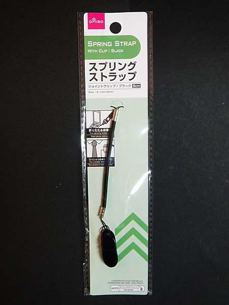
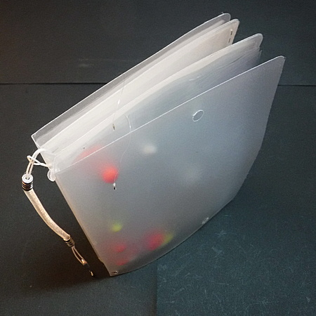
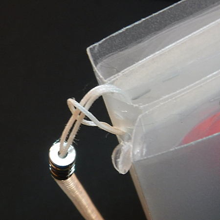
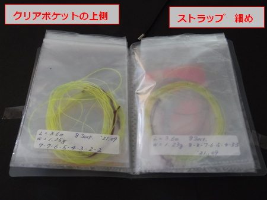

私のお気に入り
自作の道具たち テンカラ用テーパーライン・フライフィッシングの小物用ウォレット
テンカラ釣りのテーパーラインを何本か自作したり、購入したので、携行用にリーダー・小物用ウォレットを自作してみました。フライフィッシング用にも使えます。
材料および工具
- クリアポケットファイル（幅12cm、高さ16cm）ポケット8枚、3冊入り。（作例ではダイソーの商品 シェア・アルバム ）
- ストラップ（コイル状に伸びるタイプ。百円ショップの商品、細め）

ダイソーのスプリングストラップ - 両面テープ（百円ショップの商品）
- 穴開けパンチ（文房具）
- 安全ピン
製作方法
- 内容量に応じて、使うクリアポケットファイルの冊数を変えます。テンカラ用テーパーラインなら、クリアポケット6枚で裏表に計12本を収納できますので、１冊で充分でしょう。
フライフィッシング用には、粘着式やシモリウキで作った各種インジケーター、テーパーリーダー、目印用のドライウィング、自作したユーロスタイルニンフ用サイター、持っているだけで使えもしないポリリーダー etc.....と、釣れる魚の数よりも持ち歩く小物の数の方が圧倒的に多いので（作者の場合）、ポケットファイル３冊の表紙同士を両面テープで貼り合わせています。濡れて両面テープが剥がれるのが不安な方は、クリアボンド等で接着しておくと良いでしょう。
この時、３冊すべての、クリアポケットの上側が揃うように貼り合わせ・接着して下さい。間違えると悲惨です。[経験有り！] - 文房具の穴開けパンチで、ファイルの背中、コの字になっている部分の中央、上側に穴を開けます。
この時、必ずクリアポケットの上側：開口部を確かめ、そちら側に穴を開けます。そうしないと、ストラップでリーダーウォレットをベストやチェストバッグに結わえていても、落とした時に開口部が下になり、収納物がみな落下して流失する憂き目に遭います。

完成したウォレット
黄色や赤色の丸は、手製のシモリウキ型インジケーター - パンチで開けた穴にストラップを通し、フィッシングベスト、バッグなどに入れて、安全ピンなどで結わえ付けておきます。

パンチで開けた穴にストラップを通したところ 拡大写真
パンチで開けた残りカスが見えていて、お恥ずかしい
作例では、クリアポケットファイルの色が半透明なので、ちょっとどこにしまったのか探すときにとまどいますが、使用した感想は、上出来でした。３冊貼り合わせれば、収納量も充分です。
テンカラ用テーパーラインを収納するなら、市販の円形タイプほど厚みがないので、よりコンパクトに、多数を携行できると思います。

完成したウォレットを開いたところ
ちょっと見にくいですが、黒色の
ストラップを上側に結んでいます
ちょっと見にくいですが、黒色の
ストラップを上側に結んでいます
2021/10/16
私のお気に入り 目次へ
サイトマップ
ホームへ
お問い合わせ